전기공사산업기사 (2008-05-11 기출문제)
1과목: 전기응용
1. 20[℃]의 물 5[ℓ]를 용기에 넣어 1[㎾]의 전열기로 가열하여 90[℃]로 하는데 40분 걸렸다. 이 전열기의 효율은 약 몇 [%]인가?
- 46
- 51
- 56
- 61
(정답률: 59%)

2. 루소 선도가 그림과 같은 광원의 배광곡선의 식은 어떻게 되는가?
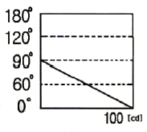
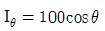
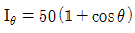
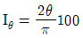
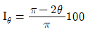
(정답률: 78%)
3. 목표치가 미리 정해진 시간적 변화를 하는 경우 제어량을 그것에 추종시키기 위한 제어는?
- 프로그래밍 제어
- 정치 제어
- 추종 제어
- 비율 제어
(정답률: 57%)
4. 열원(熱源)의 발열체 온도를 T1[K], 피열체의 온도를 T2[K], 물체의 크기, 거리, 형태, 복사율 등에 따라서 결정되는 상수를 ø, 스테판-볼쯔만(Stefan-Boltzmann)상수를 σ라할 때 발열체의 표면전력밀도 Wd의 공식은?
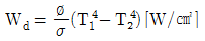
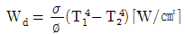
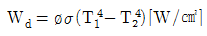
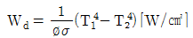
(정답률: 54%)
5. 다음 발열체 중 최고 사용온도가 가장 높은 것은?
- 니크롬 제1종
- 니크롬 제2종
- 철-크롬 제1종
- 탄화규소 발열체
(정답률: 73%)
6. 그림과 같은 광원 S 에 의하여 단면의 중심이 0 인 원통형 연돌을 비추었을 때 원통의 표면상의 한점 P 에서의 조도 값은 약 몇 [lx] 인가? (단, SP의 거리는 10[m], ⦟OSP = 10°, ⦟SOP = 20° 광원의 SP 방향의 광도를 1000[cd]라고 한다.)
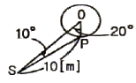
- 4.3
- 6.7
- 8.6
- 9.9
(정답률: 60%)
7. 전기철도에서 표정속도를 나타내는 것은? (단, L : 정거장간격, t : 정차시간, n : 정거장 수, T : 전 주행시간)
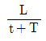
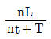
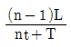
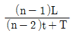
(정답률: 77%)
8. 반사율 60[%], 흡수율 20[%]를 가지고 있는 물체에 2000[lm] 의 빛을 비추었을 때 투과되는 광속은 몇 [lm] 인가?
- 100
- 200
- 300
- 400
(정답률: 79%)
9. 반사율 ρ, 투과율 τ, 반지름 r인 완전 확산성 구형 글로브의 중심에 광동 I의 점광원을 켰을 때 광속 발산도는?
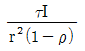
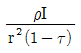
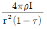
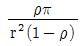
(정답률: 70%)
10. 루소선도에서 광원의 전광속 F의 식은? (단, F : 전광속, R : 반지름, S : 루소선도의 면적이다.)
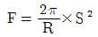
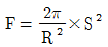
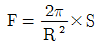
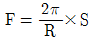
(정답률: 64%)
11. 전극 재료의 구비조건으로 잘못된 것은?
- 전기의 전도율이 클 것
- 고온에 견디고, 또한 고온에서도 기계적 강도가 클 것
- 열전도율이 많고 도전율이 작아서 전류밀도가 작을 것
- 피열물에 의한 화학작용이 일어나지 않고 침식되지 않을 것
(정답률: 75%)
12. 제어 오차가 검출될 때 오차가 변화하는 속도에 비례하여 조작량을 가감하는 동작으로서 오차가 커지는 것을 미연에 방지하는 동작은?
- PD 동작
- PID 동작
- D 동작
- P 동작
(정답률: 67%)
13. 저항 가열은 어떠한 원리를 이용한 것인가?
- 아크손
- 유전체손
- 줄열
- 히스테리시스손
(정답률: 77%)
14. 12층 건물에 엘리베이터 적재무게 800[kgf] 승강 속도 50[m/min]를 설치할 때 전동기의 용량 [kW]은 약 얼마인가? (단, 효율은 80[%] 이다.)
- 8
- 10
- 12
- 16
(정답률: 67%)
15. 교류에서 직류로 변환하는 기기로 옳지 않은 것은?
- 전동 직류 발전기
- 인버터
- 셀렌 정류기
- 회전 변류기
(정답률: 83%)
16. 전기분해에 의하여 전극에 석출되는 물질의 양은 전해액을 통과하는 총 전기량에 비례하고 또 그 물질의 화학당량에 비례하는 법칙은?
- 암페어(Ampere)의 법칙
- 패러데이(Faraday)의 법칙
- 톰슨(Thomson)의 법칙
- 줄(Joule)의 법칙
(정답률: 89%)
17. 정류방식 중 맥동율이 가장 적은 것은?
- 단상반파방식
- 단상전파방식
- 3상반파방식
- 3상전파방식
(정답률: 81%)
18. 다음 중 궤도의 요소로 포함 되지 않는 것은?
- 공통블록
- 도상
- 침목
- 레일
(정답률: 79%)
19. 효율이 높고 고속 동작이 용이하며, 소형이고 고전압 대전류에 적합한 정류기로 사용되는 것은?
- 수은정류기
- 실리콘제어정류기
- 회전변류기
- 전동발전기
(정답률: 78%)
20. 보통 건전지에서 분극작용에 의한 전압강하률 방지하기 위하여 사용되는 감극제는?
- 산화수은
- 이산화망간
- 공기
- 중크롬산
(정답률: 79%)
2과목: 전력공학
21. 어느 빌딩 부하의 총설비 전력이 400kW, 수용률이 0.5라 하면 이 빌딩의 변전설비용량은 몇 [kVA] 이상 이어야 하는가? (단, 부하역률은 80%라 한다.)
- 180kVA
- 250kVA
- 300kVA
- 360kVA
(정답률: 43%)
22. 차단기의 개폐에 의한 이상전압은 대부분 송전선 대지전압의 몇 배 정도가 최고인가?
- 2배
- 4배
- 8배
- 10배
(정답률: 39%)
23. 다음 중 피뢰기를 가장 적절하게 설명한 것은?
- 동요전압의 파두, 파미의 파형의 준도를 저감하는 것
- 이상전압이 내습하였을 때 방전에 의한 이상전압을 경감 시키는 것
- 뇌동요 전압의 파고를 저감하는 것
- 1선이 지락할 때 아크를 소멸시키는 것
(정답률: 52%)
24. 전선의 지지점 높이가 31m이고, 전선의 이도가 9m라면 전선의 평균 높이는 몇 [m] 가 적당한가?
- 25.0m
- 26.5m
- 28.5m
- 30.0m
(정답률: 28%)
25. 수전단 전압이 3300V이고, 전압강하율이 4%인 송전선의 송전단 전압은 몇 [V] 인가?
- 3395V
- 3432V
- 3495V
- 5678V
(정답률: 40%)
26. 수차에서 캐비테이션에 의한 결과로 옳지 않은 것은?
- 유수에 접한 러너나 버킷 등에 침식이 발생한다.
- 수차에 진동을 일으켜서 소음이 발생한다.
- 흡출관 입구에서 수압의 변동이 현저해 진다.
- 토출측에서 물이 역류하는 현상이 발생한다.
(정답률: 24%)
27. 다음 중 3상용 차단기의 정격차단용량으로 알맞은 것은?
- 정격전압×정격차단전류
- √3×정격전압×정격차단전류
- 3×정격전압×정격차단전류
- 3√3×정격전압×정격차단전류
(정답률: 47%)
28. 정정된 값 이상의 전류가 흘렀을 때 동작 전류의 크기와 관계 없이 항시 정해진 시간이 경과 한 후에 동작하는 계전기는?
- 순한시계전기
- 정한시계전기
- 반한시계전기
- 반한시성정한시계전기
(정답률: 49%)
29. 교류전송에서는 송전거리가 멀어질수록 동일 전압에서의 송전 가능전력이 적어진다. 다음 중 그 이유로 가장 알맞은 것은?
- 선로의 어드미턴스가 커지기 때문이다.
- 선로의 유동성 리액턴스가 커지기 때문이다.
- 코로나 손실이 증가하기 때문이다.
- 표피효과가 커지기 때문이다.
(정답률: 37%)
30. 터빈입구의 엔탈피 815kal/kg, 복수의 엔탈피 270kal/kg, 유입증기량 300t/h일 때, 발전기 출력은 75000kW로 된다. 발전기 효율을 0.98로 한다면 터빈의 열효율은 약 몇 [%] 인가?
- 30.3%
- 40.3%
- 50.3%
- 60.3%
(정답률: 27%)
31. 동일한 2대의 단상변압기를 V결선하여 3상전력을 100kVA까지 배전할 수 있다면 똑같은 단상변압기 1대를 추가하여 △결선하게 되면 3상전력을 약 몇 [kVA]까지 배전할 수 있겠는가?
- 57.7kVA
- 70.5kVA
- 141.4kVA
- 173.2kVA
(정답률: 36%)
32. 다음 그림은 카르노 사이클(carnot cycle)을 표현한 것이다. 단열팽창에 해당 되는 구간은? (단, P는 압력이고 V는 부피이다)
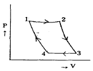
- 1→2
- 2→3
- 3→4
- 4→1
(정답률: 32%)
33. 원자력발전에서 제어봉에 사용되는 제어재로 알맞은 것은?
- 하프늄
- 베릴늄
- 나트륨
- 경수
(정답률: 24%)
34. 다음 중 뇌해방지와 관계가 없는 것은?
- 댐퍼
- 소호각
- 가공지선
- 매설지선
(정답률: 48%)
35. 장거리 송전선로의 특성을 정화하게 다루기 위한 회로로 알맞은 것은?
- 분포정수회로
- 분산부하회로
- 집중정수회로
- 특성임피던스회로
(정답률: 43%)
36. 직접접지 방식이 초고압 송전선에 채용되는 이유 중 가장 타당한 것은?
- 지락고장시 병행 통신선에 유기되는 유도전압이 작기때문에
- 지락시의 지락전류가 적으므로
- 계통의 절연을 낮게 할 수 있으므로
- 송전선의 안정도가 높으므로
(정답률: 25%)
37. 가공 송전선에 사용되는 애자 1연 중 전압부담이 최대인 애자는?
- 철탑에 제일 가까운 애자
- 전선에 제일 가까운 애자
- 중앙에 있는 애자
- 철탑과 애자연 중앙의 그 중간에 있는 애자
(정답률: 51%)
38. 배전선의 전압조정 방법이 아닌 것은?
- 승압기 사용
- 저전압계전기 사용
- 병렬콘덴서 사용
- 주상변압기 탭 전환
(정답률: 33%)
39. 역률 80%, 10000kVA의 부하를 갖는 변전소에 2000kVA의 콘덴서를 설치하여 역률을 개선하면 변압기에 걸리는 부하는 몇 [kVA] 정도 되는가?
- 8000kVA
- 8500kVA
- 9000kVA
- 9500kVA
(정답률: 26%)
40. 복도체를 사용하면 송전용량이 증가하는 주된 이유로 알맞은 것은?
- 코로나가 발생하지 않는다.
- 선로의 작용인덕턴스가 감소한다.
- 전압강하가 적어진다.
- 무효전력이 적어진다.
(정답률: 28%)
3과목: 전기기기
41. 다이오드를 사용한 단상전파정류회로에서 100[A]의 직류를 얻으려고 한다. 이 때 정류기의 교류측 전류는 약 몇 [A]인가?
- 111
- 167
- 222
- 278
(정답률: 32%)
42. 중권으로 감긴 직류 전동기의 극수 2, 매극의 자속수 0.09[Wb], 전도체수 80, 부하전류 12[A]일 때 발생하는 토크[kg·m]는 약 얼마인가?
- 1.4
- 2.8
- 3.8
- 4.5
(정답률: 14%)
43. 철극형( 극형) 발전기의 특징은?
- 형이 커진다.
- 회전이 빨라진다.
- 소음이 많다.
- 전기자 반작용 자속수가 역률의 영향을 받는다.
(정답률: 38%)
44. 직류분권 전동기가 있다. 여기에 전원전압 120[V]를 가했을 때 전기자 전류 35[A]가 흐르고 회전수는 1300[rpm]이었다. 이때 계자전류 및 부하전류를 일정하게 유지하고 전원 전압을 150[V]로 올리면 회전수[rpm]는 약 얼마인가? (단, 전기자 저항은 0.4[Ω]이다.)
- 1543
- 1668
- 1625
- 2031
(정답률: 24%)
45. 동기기의 과도 안정도를 증가시키는 방법이 아닌 것은?
- 속응 여자 방식을 채용한다.
- 동기 탈조 계전기를 사용한다.
- 회전자의 플라이휠 효과를 작게 한다.
- 동기화 리액턴스를 작게 한다.
(정답률: 39%)
46. 전부하에서 동손 100[W], 철손 50[W]인 변압기가 최대효율[%]을 나타내는 부하는?
- 50
- 67
- 70
- 86
(정답률: 32%)
47. 25[kW], 125[V], 1200[rpm]의 직류 타여자 발전기의 전기자 저항(브러시 저항 포함)은 0.4[Ω] 이다. 이 발전기를 정격상태에서 운전하고 있을 때 속도를 200[rpm]으로 저하시켰다면 발전기의 유기 기전력[V]은 어떻게 변화하겠는가? (단, 정상 상태에서의 유기 기전력은 E 라 한다.)
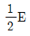
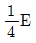
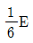
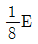
(정답률: 36%)
48. 200[kW], 200[V]의 직류 분권 발전기가 있다. 전기자 권선의 저항이 0.025[Ω]일 때 전압변동률은 몇 [%]인가?
- 6.0
- 12.5
- 20.5
- 25.0
(정답률: 32%)
49. 임피던스 강하가 5[%]인 변압기가 운전 중 단락 되었을 때 단락 전류는 정격 전류의 몇 배인가?
- 10
- 15
- 20
- 25
(정답률: 35%)
50. 용량 10[kVA], 철손 120[W], 전부하 동손 200[W]인 단상 변압기 2대를 V결선하여 부하를 걸었을 때, 전부하 효율은 약 몇 [%] 인가? (단, 부하의 역률은 √3/2이라 한다.)
- 99.2
- 98.3
- 97.9
- 95.9
(정답률: 13%)
51. 유도 전동기에서 SCR을 사용하여 속도를 제어하는 경우 변화시키는 것은?
- 주파수
- 극수
- 위상각
- 전압의 최대치
(정답률: 35%)
52. 유도전동기의 기동방식 중 권선형에만 사용할 수 있는 방식은?
- 리액터기동
- Y-△
- 2차 저항기동
- 기동보상기에 의한 기동
(정답률: 38%)
53. 동기발전기의 전기자 권선을 단절권으로 하는 가장 좋은 이유는?
- 기전력을 높이는데 있다.
- 절연이 잘 된다.
- 효율이 좋아진다.
- 고조파를 제거해서 기전력의 파형을 좋게 한다.
(정답률: 43%)
54. 50[Hz] 12극의 3상 유도 전동기가 정격 전압으로 정격출력 10[HP]를 발생하며 회전하고 있다. 이 때의 회전수는 약 몇 [rpm]인가? (단, 회전자 동손은 350[W], 회전자 입력은 출력과 회전자동손과의 합이다.)
- 468
- 478
- 485
- 500
(정답률: 29%)
55. 변압기의 효율이 가장 좋을 때의 조건은?
- 철손 = 동손
- 철손 = 1/2동손
- 1/2철손 = 동손
- 철손 = 2/3동손
(정답률: 48%)
56. 4극 60[Hz]의 3상 동기 발전기가 있다. 회전자의 주변속도를 200[m/s] 이하로 하려면 회전자의 최대 직경을 약 몇 [m]로 하여야 하는가?
- 1.5
- 1.8
- 2.1
- 2.8
(정답률: 39%)
57. 직류기의 양호한 정류를 얻는 조건이 아닌 것은?
- 정류 주기를 크게 할 것
- 정류 코일의 인덕턴스를 작게 할 것
- 리액턴스 전압을 작게 할 것
- 브러시 접촉 저항을 작게 할 것
(정답률: 42%)
58. 3상 유도전동기의 원선도를 그리는데 필요하지 않는 것은?
- 구속 시험
- 무부하 시험
- 슬립 측정
- 저항 측정
(정답률: 37%)
59. 3상 직권정류자전동기의 구조를 설명한 것 틀린 것은?
- 고정자에는 P극이 될 수 있는 3상 분포권선이 감겨있다.
- 회전자는 직류기의 전기자와 거의 같다.
- 정류자 위에 브러시가 전기각 2π/3의 간격으로 배치되어 있다.
- 중간변압기를 설치할 때에는 고정자 권선과 병렬로 설치한다.
(정답률: 31%)
60. 변압기의 내부고장 보호에 쓰이는 계전기로서 가장 적당한 것은?
- 과전류 계전기
- 역상 계전기
- 접지 계전기
- 브후훌쯔 계전기
(정답률: 43%)
4과목: 회로이론
61. 저항 40[Ω], 임피던스 50[Ω]의 직렬 유도부하에서 소비되는 무효전력[var]은 얼마인가? (단, 인가전압은 100[V]이다.)
- 120
- 160
- 200
- 250
(정답률: 24%)
62. 두 코일의 자기 인덕턴스가 L1[H], L2[H]이고 상호인덕턴스가 M 일 때 결합계수 k는?
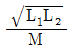
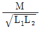
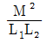
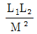
(정답률: 39%)
63. 다음 파형의 라플라스 변환은?
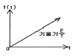
- E/s
- E/s2
- E/Ts
- E/Ts2
(정답률: 29%)
64. 그림의 회로에서 단자 a, b에 걸리는 전압 Vab는 몇 [V]인가?
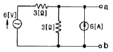
- 12
- 18
- 24
- 36
(정답률: 30%)
65. 그림과 같은 회로에서 정전용량 C[F]를 충전한 후 스위치 S를 닫아서 이것을 방전할 때 과도전류는? (단, 회로에서 저항이 없다)
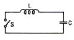
- 불변의 진동전류
- 감쇠하는 전류
- 감쇠하는 진동전류
- 일정값까지 증가하고 그 후 감쇠하는 전류
(정답률: 33%)
66. R[Ω]저항 3개를 Y로 접속하고 이것을 선간전압 200[V]의 평형 3상 교류 전원에 연결할 때 선전류가 20[A] 흘렀다. 이 3개의 저항을 △로 접속하고 동일 전원에 연결하였을 때의 선전류는 약 몇 [A] 인가?
- 30
- 40
- 50
- 60
(정답률: 38%)
67. 다음 그림에서 V1=24[V]일 때 Vo[V]의 값은?
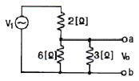
- 8
- 12
- 16
- 24
(정답률: 36%)
68. 대칭 좌표법에 관한 설명 중 잘못된 것은?
- 불평형 3상 회로 비접지식 회로에서는 영상분이 존재한다.
- 대칭 3상 전압에서 영상분은 0 이 된다.
- 대칭 3상 전압은 정상분만 존재한다.
- 불평형 3상 회로의 접지식 회로에서는 영상분이 존재한다.
(정답률: 21%)
69. 전류 i=30sinωt+40sin(3ω+45°)[A]의 실효값은 몇 [A]인가?
- 25
- 25√2
- 50
- 50√2
(정답률: 25%)
70. R=10[Ω], ωL=5[Ω], 1/ωC=20[Ω]이 직렬로 접속된 회로에서 기본파에 대한 합성임피던스(Z1)와 제3고조파에 대한 합성임피던스(Z3)는 각각 몇[Ω] 인가?
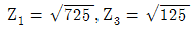
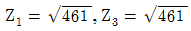
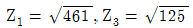
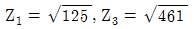
(정답률: 31%)
71. R=15[Ω], XL=12[Ω], XC=30[Ω]이 병렬로 접속된 회로에 120[V]의 교류전압을 가하면 전원에 흐르는 전류[A]와 역률[%]은 각각 얼마인가?
- 22, 85
- 22, 80
- 22, 60
- 10, 80
(정답률: 24%)
72. 평형 3상 부하에 전력을 공급할 때 선전류 값이 20[A] 이고 부하의 소비전력이 4[kW] 이다. 이 부하의 등가 Y 회로에 대한 각 상의 저항값은 약 몇 [Ω] 인가?
- 3.3
- 5.7
- 7.2
- 10
(정답률: 26%)
73. 3상 불평형 전압에서 역상전압이 10[V], 정상전압이 50[V], 영상전압이 200[V]라고 한다. 전압의 불평형률은 얼마인가?
- 0.1
- 0.⑤
- 0.2
- 0.5
(정답률: 33%)
74. f(t)=δ(t)-be-bt의 라플라스 변환은? (단, δ(t)는 임펄스 함수이다.)
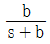
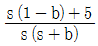
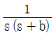
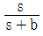
(정답률: 21%)
75. 구동점 임피던스에 있어서 영점(Zero)은?
- 전류가 흐르지 않는 경우이다.
- 회로를 개방한 것과 같다.
- 전압이 가장 큰 상태이다.
- 회로를 단락한 것과 같다.
(정답률: 25%)
76. 비정현파의 일그러짐의 정도를 표시하는 양으로서 왜형률이란?
- 평균치/실효치
- 실효치/최대치
- 고조파만의 실효치/기본파의 실효치
- 기본파의 실효치/고조파만의 실효치
(정답률: 37%)
77. 그림과 같은 π형 4단자 회로의 어드미턴스 파라미터 중 Y11은?
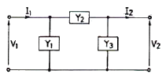
- Y1
- Y2
- Y1+Y2
- Y2+Y3
(정답률: 38%)
78. 그림과 같은 회로의 전달함수는? (단, 초기조건은 0 이다)
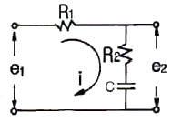
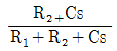
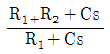
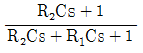
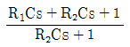
(정답률: 40%)
79. 그림과 같은 회로에서 t=0의 순간 S를 열었을 때 L의 양단에 발생하는 역기전력은 인가 전압의 몇 배가 발생하는가? (단, 스위치 S가 열기전에 회로는 정상상태에 있었다.)
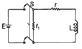
(정답률: 25%)
80. 저항과 콘덴서를 병렬로 접속한 회로에 직류 100[V]를 가하면 5[A]가 흐르고, 교류 300[V]를 가하면 25[A]가 흐른다. 이때 콘덴서의 리액턴스는 몇 [Ω] 인가?
- 7
- 10
- 14
- 15
(정답률: 30%)
5과목: 전기설비
81. 전로의 중성점을 접지하는 목적에 해당 되지 않는 것은?
- 보호장치의 확실한 동작을 확보
- 이상전압의 억제
- 상시 부하전류의 일부를 대지로 흐르게 함으로써 위험에 대처
- 대지전압의 저하
(정답률: 24%)
82. 최대사용전압이 22900V인 3상4선식 중성선 다중접지식 전로와 대지 사이의 절연내력 시험전압은 몇 [V] 인가?
- 21068V
- 25229V
- 28752V
- 32510V
(정답률: 40%)
83. “조상설비”에 대한 용어의 정의로 알맞은 것은?
- 전압을 조정하는 설비를 말한다.
- 전류를 조정하는 설비를 말한다.
- 유효전력을 조정하는 전기기계기구를 말한다.
- 무효전력을 조정하는 전기기계기구를 말한다.
(정답률: 38%)
84. 타냉식의 특별고압용 변압기의 냉각장치에 고장이 생긴 경우 보호하는 장치로 가장 알맞은 것은?
- 경보장치
- 자동차단장치
- 압축공기장치
- 속도조정장치
(정답률: 43%)
85. 사용전압이 154kV인 가공전선로를 제1종 특별고압 보안 공사로 시설할 때 사용되는 경동연선의 단면적은 몇 [mm2]이상 이어야 하는가?
- 55mm2
- 100mm2
- 150mm2
- 200mm2
(정답률: 35%)
86. 터널 등에 시설하는 사용전압이 220V 인 전구선의 단면적은 몇 [mm2] 이상이어야 하는가?
- 0.5mm2
- 0.75mm2
- 1.25mm2
- 1.4mm2
(정답률: 31%)
87. 다음 중 지중전선로에 사용하는 지중함의 시설기준으로 적절하지 않은 것은?
- 견고하고 차량 기타 중량물의 압력에 견디는 구조일 것
- 안에 고인 물을 제거할 수 있는 구조로 되어 있을 것
- 뚜껑은 시설자 이외의 자가 쉽게 열 수 없도록 시설할 것
- 조명 및 세척이 가능한 적당한 장치를 시설할 것
(정답률: 47%)
88. 네온 방전관을 사용한 사용전압 12000V 인 방전등에 사용되는 네온 변압기 외함의 접지공사로서 알맞은 것은?
- 제1종 접지공사
- 제2종 접지공사
- 제3종 접지공사
- 특별제3종 접지공사
(정답률: 37%)
89. 저압 가공전선이 가공약전류 전선과 접근하여 시설될 때 가공전선과 가공약전류 전선 사이의 이격거리는 몇 [㎝] 이상이어야 하는가?
- 30㎝
- 40㎝
- 60㎝
- 80㎝
(정답률: 36%)
90. 다음 중 농사용 저압 가공전선로의 시설 기준으로 옳지 않은 것은?
- 사용전압이 저압일 것
- 저압 가공 전선의 인장강도는 1.38kN 이상일 것
- 저압 가공 전선의 지표상 높이는 3.5m 이상일 것
- 전선로의 경간은 40m 이하일 것
(정답률: 31%)
91. 목장에서 가축의 탈출을 방지하기 위하여 전기울타리를 시설하는 경우의 전선은 인장강도가 몇 [kN] 이상의 것이어야 하는가?
- 0.39kN
- 1.38kN
- 2.78kN
- 5.93kN
(정답률: 35%)
92. 합성수지관 공사시 관 상호간 및 박스와의 접속은 관에 삽입하는 깊이를 관 바깥지름의 몇 배 이상으로 하여야 하는가? (단, 접착제를 사용하지 않는 경우이다.)
- 0.5배
- 0.8배
- 1.2배
- 1.5배
(정답률: 36%)
93. 특별고압 가공전선로의 시설에 있어서 중성선을 다중 접지하는 경우에 각각 접지한 곳 상호 간의 거리는 전선로에 따라 몇 [m] 이하이어야 하는가?
- 150m
- 300m
- 400m
- 500m
(정답률: 20%)
94. 다음 중 가공전선로의 지지물로 사용하는 지선에 대한 설명으로 옳지 않은 것은?
- 지선의 안전율은 2.5 이상이며, 허용 인장하중의 최저는 4.31kN 으로 한다.
- 지선에 연선을 사용할 경우 소선(素線) 4가닥 이상의 연선 이어야 한다.
- 도로를 횡단하는 경우 지선의 높이는 기술상 부득이한 경우 등을 제외하고 지표상 5m 이상으로 하여야 한다.
- 지중부분 및 지표상 30㎝까지의 부분에는 내식성이 있는 것을 사용한다.
(정답률: 39%)
95. 고압 가공전선로의 가공지선으로 나경동선을 사용하는 경우의 지름은 몇 [㎜] 이상이어야 하는가?
- 3.2㎜
- 4.0㎜
- 5.5㎜
- 6.0㎜
(정답률: 33%)
96. 사용전압이 35000V 이하인 특별고압 가공전선이 상부 조영재의 위쪽에서 제1차 접근상태로 시설되는 경우, 특별고압 가공전선과 건조물의 조영재 이격거리는 몇 [m] 이상이어야 하는가? (단, 전선의 종류는 케이블이라고 한다.)
- 0.5m
- 1.2m
- 2.5m
- 3.0m
(정답률: 25%)
97. 가반형의 용접 전극을 사용하는 아크 용접장치의 용접변압기의 1차측 전로의 대지전압은 몇 [V] 이하이어야 하는가?
- 150V
- 220V
- 300V
- 380V
(정답률: 38%)
98. 다음 ( )안에 들어갈 내용으로 알맞은 것은?
- 300m
- 1㎞
- 5㎞
- 10㎞
(정답률: 19%)
99. 다음 중 전기부식방지를 위한 귀선의 시설방법에 대한 설명으로 옳지 않은 것은?
- 귀선은 부극성(負極性)으로 할 것
- 이음매 하나의 저항은 그 레일의 길이 5m의 저항에 상당한 값 이하일 것
- 귀선용 레일은 특수한 곳 이외에는 길이 30m 이상이되도록 연속하여 용접할 것
- 단면적 38mm2 이상, 길이를 60㎝ 이상의 연동 연선을 사용한 본드 2개 이상을 용접함으로써 레일 용접에 갈음할 수 있다.
(정답률: 30%)
100. 다음 중 옥내전로의 시설 기준으로 적절하지 않은 것은?
- 주택의 옥내전로의 대지전압은 250V 이하이어야 한다.
- 주택의 옥내전로의 사용전압은 400V 미만이어야 한다.
- 주택의 전로 인입구에는 인체보호용 누전차단기를 시설하여야 한다.
- 정격 소비 전력 2kW 이상의 전기기계기구는 옥내배선과 직접 접속한다.
(정답률: 24%)
먼저, 20[℃]의 물 5[ℓ]을 가열하여 90[℃]로 만드는 데 필요한 열의 양을 계산해보자. 이는 다음과 같다.
열의 양 = 물의 질량 × 비열 × 온도 변화량
= 5[kg] × 4.18[J/(g·℃)] × (90-20)[℃]
= 1564[kJ]
여기서 비열은 물의 비열인 4.18[J/(g·℃)]을 사용하였다.
다음으로, 전열기가 사용한 전기의 양을 계산해보자. 전열기의 출력은 1[㎾]이므로, 40분(=2400초) 동안 사용한 전기의 양은 다음과 같다.
전기의 양 = 출력 × 시간
= 1[kW] × 2400[s]
= 2400[kJ]
따라서, 전열기의 효율은 다음과 같다.
효율 = 출력 ÷ 입력
= 1564[kJ] ÷ 2400[kJ] × 100[%]
≈ 65[%]
따라서, 보기에서 정답이 "61"인 이유는 계산 결과를 반올림하여 나타낸 것이다.